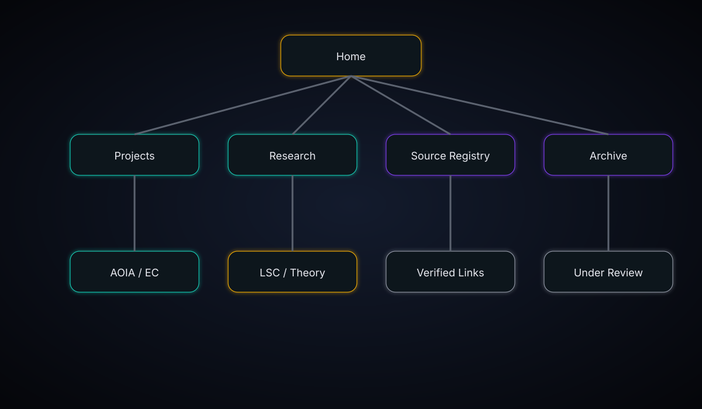

1. Idea and concept
Define the question, owner, intended public scope, and claims that must remain TO VERIFY.
Aureon Zorza Technologies & Partners brings engineering prototypes, research tracks, partner concepts, and historical records into one legible system without hiding their different levels of maturity.
The registry supplies common metadata and navigation. Each project profile carries its own status, source links, current evidence, verification gaps, and next step.

Movement between stages requires source evidence and review. A relationship to a validated project does not validate another entry.
Define the question, owner, intended public scope, and claims that must remain TO VERIFY.
Collect sources, specifications, reproducible methods, and clear review boundaries.
Expose bounded implementation evidence without presenting an early system as production-ready.
Test security, reproducibility, claims, licenses, and data provenance.
Link stable code, archived artifacts, DOI records, and reviewed public wording.
Keep status and sources current as the implementation and evidence change.
Partner directions remain useful in the map while clearly labeled as drafts, concepts, or TO VERIFY until public source validation is complete.
Portfolio registry, project profiles, source records, updates, and collaboration routes.
Source inventory, reproducibility audits, security review, compliance boundaries, and publication approval.
Future maps, filters, and lab dashboards should consume the same evidence-aware project data rather than create a second promotional truth.